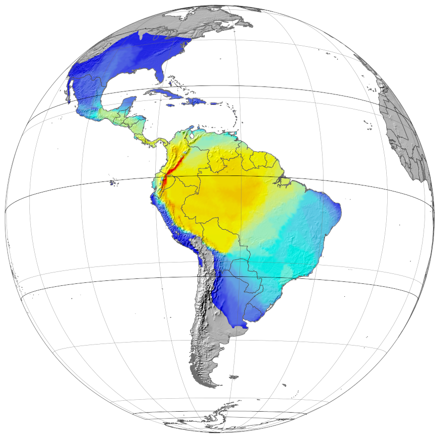

Maps for Heliconius butterflies and allies
https://heliconius-maps.github.io
A website providing interactive maps for visualising the phenotypes and geographic distributions of
Heliconius and related genera, along with a portal for downloading the underlying data.
The maps were first published by Rosser et al. 2012, and the current mapping framework along with additional data published in Rosser and Mallet (2024).
Rosser and Mallet (2024) Tropical Lepidoptera Research 34(2):104-107.
Rosser et al. (2012) Biological Journal of the Linnean Society 105:479-497.
